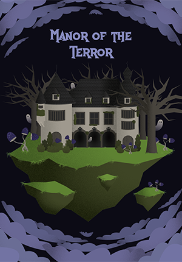

Présentation
Lloris Jubiste est un écrivain, conteur oral et illustrateur. Il est né le 21 novembre 1975 et à étudié le théatre et les arts littéraires pendant 6 ans.
Il aime raconter une histoire autour d’un personnage plein de tourments.
Lloris a commencé en écrivant des romans puis s’est tourné vers l’illustration et les contes oraux il y a 3 ans.
Avant d’écrire, Lloris était comédien dans une troupe de théatre : “La Bouillabaise”. En effet, Lloris est originaire d’un petit village non loin de Marseille. Son amour pour le sud de la France est retranscrit dans ses écrits.
Vous pouvez retrouver toutes ses oeuvres sur ce site. Elles seront rangées par type : Romans, contes et illustrations.
Lloris vous souhaite une bonne visite !
Charline dans les villes
Pour ses études, Charline doit quitter sa terre natale. Elle va s’émanciper en découvrant la ville non loin de son petit village dans la campagne.
Charline va faire de nombreuses rencontres originales et variées avec les gens de la ville. Cependant une menace plane sur le quartier de Boubouche...
Corentin va t-il s’en sortir ?
Est-ce qu’il va mourir ? Comment vas-le prendre sa femme ?
Comment va Pilou son ami d’enfance qu’il a perdu de vue il y a quelques années ?
Va-t-il marquer le panier final pour la gagne ?
Lisez le livre et vous aurez quasiment toutes les réponses à vos questions.
Coraline au village
Suite à une rupture amoureuse, Coraline décide de profiter du calme de la campagne.
C’est dans le petit village de Exireuil que Coraline espère trouver la paix et l’air frais de la campagne.
Malheureusement, tout est très loin de se passer comme prévu et Coraline va faire face à de nombreuses embuches.
Le manoir de la terreur
2019 - Dessin numérique
La fleur qui fâne
2019 - Dessin au crayon
Pas de chance pour Thomas
Thomas n’arrive pas à se sortir de sa situation compliqué.

Le loup qui voulait voler
Un petit loup en forêt ne rêve que d’une chose : apprendre à voler.